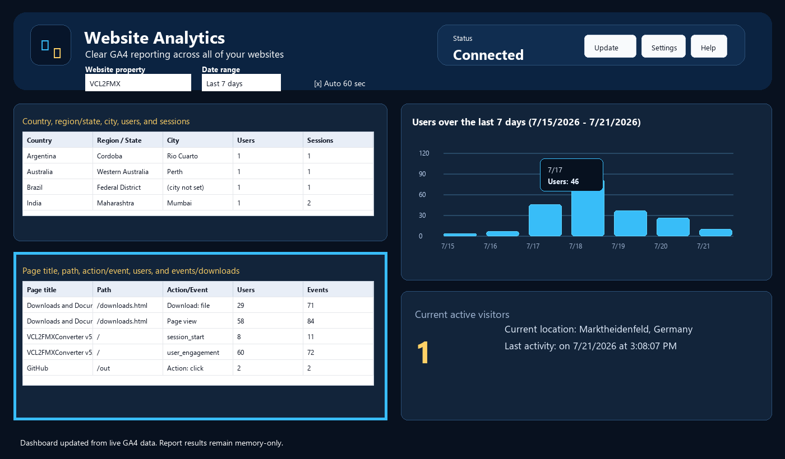

Pages, Downloads, and Actions

What the page/action grid shows
- The lower-left grid shows Page title, Path, Action/Event, Users, and Events/downloads.
- Rows combine pages, downloads, and GA4 events returned for the selected property/date range.
- Downloads appear only when GA4 reports download events such as file_download.
How to read it
- Use Page title and Path to identify the content.
- Use Action/Event to distinguish page views, downloads, scrolls, clicks, and other reported events.
- Use Users and Events/downloads to see how many visitors used the item and how many times the event occurred.